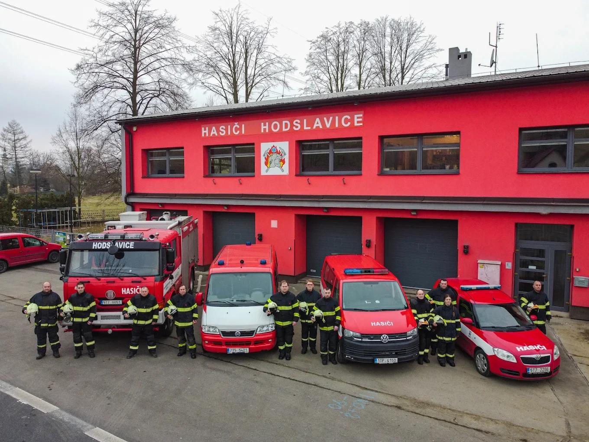

JPO IIISDH od roku 1883Hodslavice a okolí
Hasiči Hodslavice
Výjezdová jednotka, sbor, mladí hasiči a akce pro obec. Stručně, přehledně a na jednom místě.
!
Web není tísňová linka.
Volat 112V případě požáru, dopravní nehody nebo ohrožení života volejte okamžitě 150 nebo 112. Kontakty na sbor slouží pro běžnou komunikaci, nábor a kulturní akce.